Bienvenido a Turismo en Tlaxcala, tu guía definitiva para descubrir los rincones más fascinantes de uno de los estados más pequeños pero ricos en historia y cultura de México. Tlaxcala, conocida por su impresionante patrimonio colonial, exuberante naturaleza y tradiciones ancestrales, ofrece una experiencia única para quienes buscan conectar con el pasado mientras disfrutan de su vibrante presente.
Desde su Centro Histórico, lleno de iglesias monumentales y plazas pintorescas, hasta sus paisajes naturales como la Malinche, Tlaxcala tiene algo para todos. En este sitio, encontrarás información detallada sobre los principales atractivos turísticos, y una inmersión en las costumbres que hacen de Tlaxcala un destino inolvidable.
Prepárate para explorar lo mejor de Tlaxcala: su cultura, su historia, y su hospitalidad te esperan. ¡Tlaxcala sí existe y está lista para sorprenderte!
Centro Histórico De Tlaxcala
El Centro Histórico de Tlaxcala ofrece una variedad de actividades y lugares interesantes para visitar. Estas son algunas de las recomendaciones que puedes visitar:
- Catedral de Nuestra Señora de la Asunción: Una de las primeras catedrales construidas en América Latina, con impresionantes cúpulas y una estructura colorida1.
- Plaza de la Constitución: El corazón del centro histórico, rodeada de edificios coloniales y portales con restaurantes y bares
- Murales del Palacio de Gobierno: Estos murales, creados por Desiderio Hernández Xochitiotzin, representan la historia y tradiciones de Tlaxcala
- Museo de Arte de Tlaxcala: Ubicado en un edificio del siglo XIX, este museo cuenta con exposiciones permanentes, incluyendo una dedicada a Frida Kahlo
- Escalinata de los Héroes: Un monumento que ofrece una vista panorámica de la ciudad y es ideal para tomar fotos
Además, puedes disfrutar de un recorrido en el tranvía turístico que te llevará a los principales atractivos del centro en aproximadamente 60 minutos
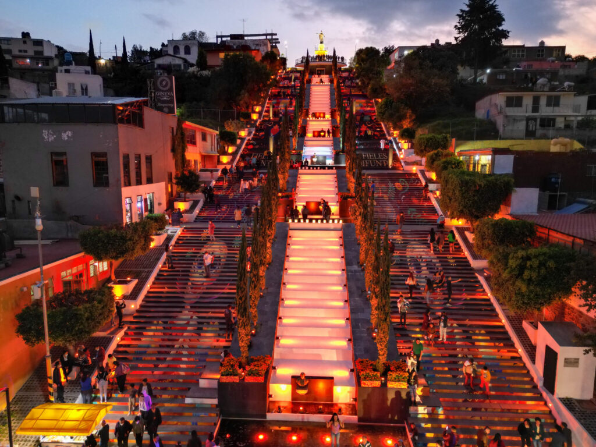
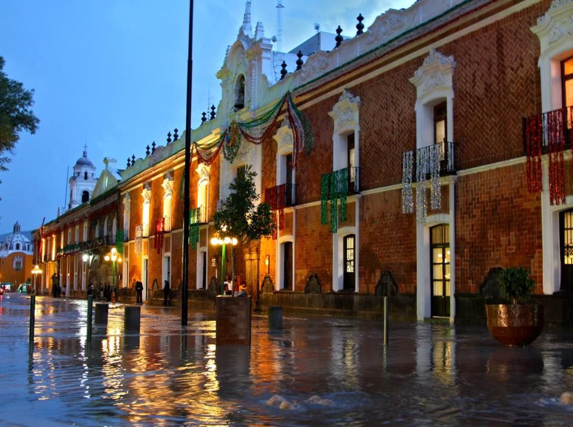
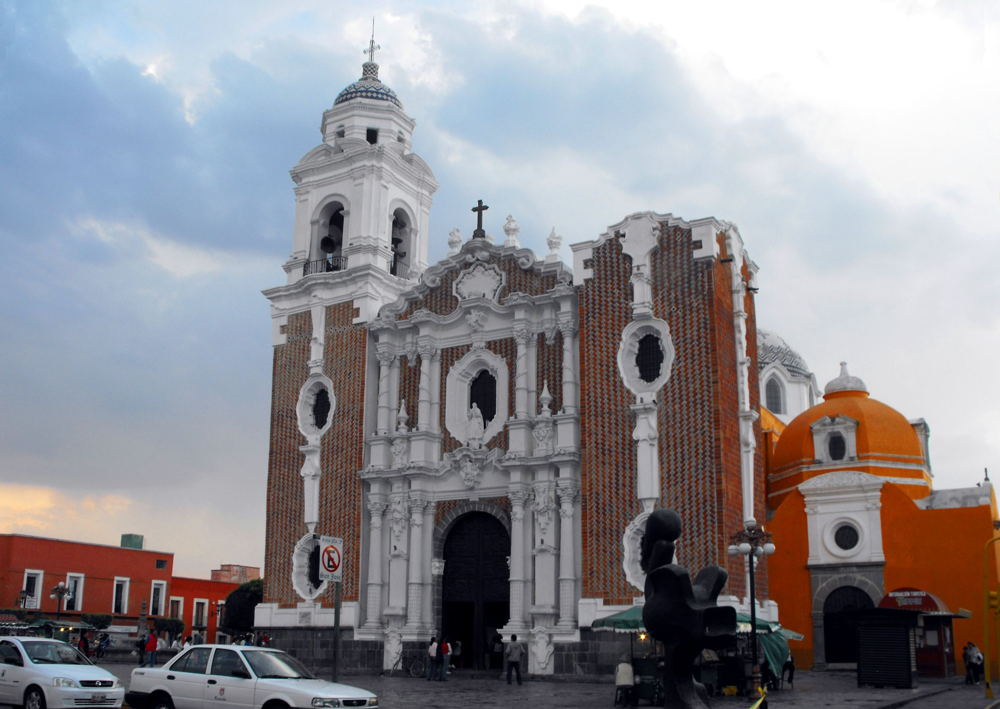
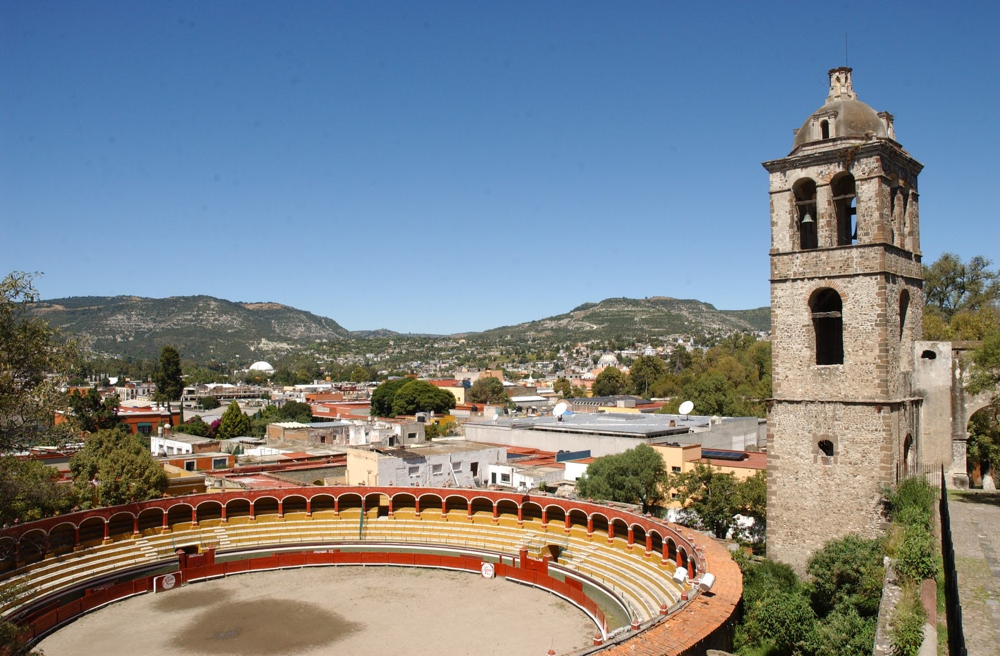
Puedes visitar el Centro Histórico de Tlaxcala en Google Maps.
Exconvento de San Francisco
Fue construido entre los años 1537 y 1540, que se encuentra al sureste de la plaza principal de Tlaxcala, fue declarado por la Organización de las Naciones Unidas para la Educación, la Ciencia y la Cultura (UNESCO), como Patrimonio Cultural de la Humanidad.
Esta declaración se da luego de un largo proceso iniciado en 1994, por lo que el nombramiento que hoy recibe el Complejo Conventual Franciscano de Nuestra Señora de la Asunción, mejor conocido como la catedral de Tlaxcala, es una modalidad de extensión, ya que formará parte de la extensión del Bien Seriado Primeros Monasterios del siglo XVI en las Laderas del Popocatépetl, los cuales fueron declarados patrimonio mundial hace 27 años.
La declaración se dio durante la 44 sesión de la UNESCO, que se lleva a cabo en China, en la que el Consejo Internacional de Monumentos y Sitios (Icomos) consideró que el Complejo Conventual de San Francisco, por ser parte del programa de construcción para la evangelización y colonización de los territorios del norte de México, es uno de los tres monasterios más importantes de América, que sigue en pie y que representa esa época.
Esta denominación se suma a la que la UNESCO otorgó en 2019 a Tlaxcala, con el proceso de elaboración de talavera, la cual es considerada como Patrimonio Cultural Inmaterial.
Si aún no lo conoces, te contamos que el Convento de San Francisco de Nuestra Señora de la Asunción está construido con una sola nave, con techado de madera a dos aguas, la cubierta es de viguería, adornado por un artesonado de madera de estilo mudéjar. La cúpula del templo es de forma octagonal, tiene una capilla abierta, una capilla posa, y otra anexa al templo. La torre de su campanario se encuentra separada del conjunto arquitectónico. Lo que fuera la casa conventual, hoy se encuentra el Museo Regional del estado.
¡Recuerda que si visitas Tlaxcala, no puedes dejar de visitarlo!
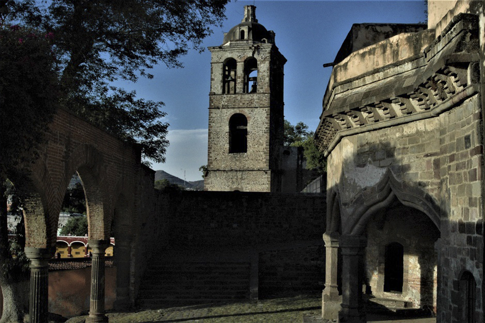
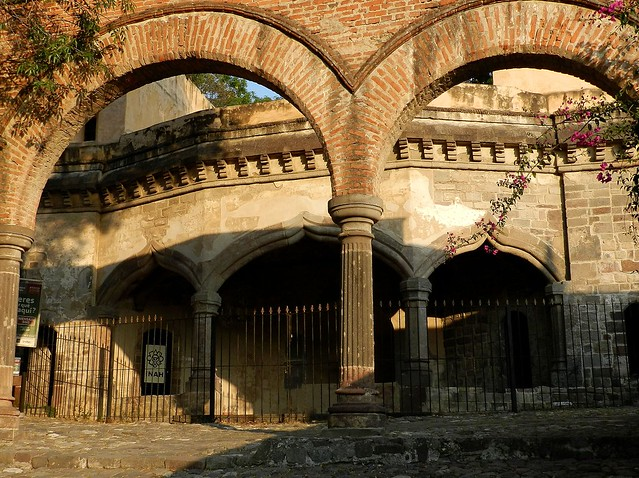
Puedes visitar el Ex Convento en Google Maps.
Santuario de Luciérnagas
El Santuario de las Luciérnagas está situado en la zona ecológica de Nanacamilpa Tlaxcala, en la parte más alta del estado en la región del Espolón de la Sierra Nevada, es un bosque de pino, encino y oyamel, conocido a nivel internacional por viajeros amantes de la naturaleza.
Dentro del santuario se proporciona el servicio de avistamiento de luciérnagas, este es un recorrido guiado donde se te brinda toda la información relevante del lugar, además el guía es quien cuida de ti y del grupo para que solo te ocupes de apreciar este fenómeno natural que sucede una vez al año durante escasos dos meses.
Fenómeno natural que no te puedes perder desde mediados de Junio hasta mediados de Agosto, importante considerar la sobredemanda que existe los días viernes, sábados y domingos de la temporada, si es posible realiza la visita de lunes a jueves para que tu viaje sea más placentero y disfrutes al máximo lo que se puede ofrecer en este grandioso lugar.
En sentido estricto el fenómeno se reduce a aproximadamente sesenta días y en promedio dura una hora cada avistamiento, por tal razón es de carácter limitado y durante el año no se puede apreciar este mágico momento solo en temporal de lluvias durante un corto tiempo.
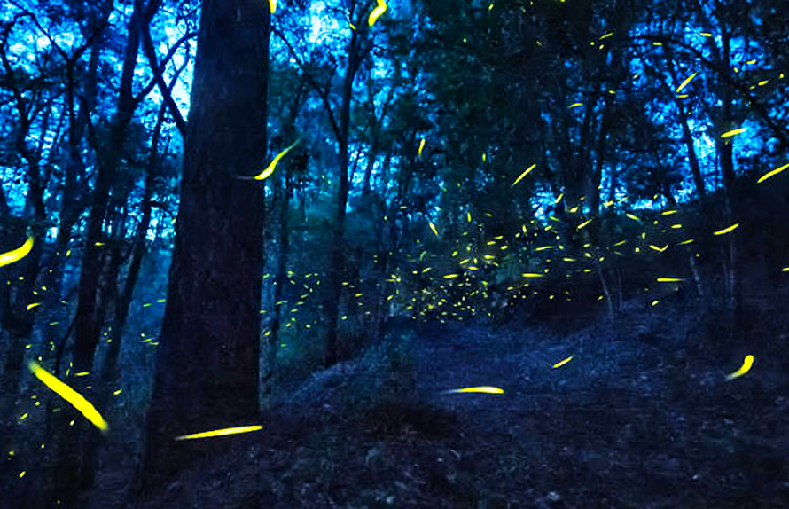

Puedes visitar el Santuario de Luciérnagas de Nanacamilpa en Google Maps.
Centro Vacacional La Trinidad
El mejor lugar natural e histórico para hospedarse, construido entre los años 1880 y 1884 con muros de cantera y bóveda catalana.
Antigua fábrica textil y joya arquitectónica tipo inglés, ubicado en el hermoso Estado de Tlaxcala. El Centro Vacacional La Trinidad lo invita a conocer sus modernas y bellas instalaciones que reflejan la más pura tradición mexicana, gozando de un ambiente muy nuestro que le permitirá disfrutar de nuevas experiencias y pasar bellos momentos en compañía de su familia. Además de conocer su Museo de sitio referente de la vida obrera del siglo XIX y su hermosa capilla de la “Santísima Trinidad” con una hermosa fachada de estilo neogótico.
Algunos de los servicios que se ofrecen son:
- Gimnasio
- Restaurante
- Go Karts
- Tirolesa
- Mini Golfito
- Áreas verdes
Puedes visitar el Centro Vacacional La Trinidad en Google Maps.
Zona Arqueológica de Cacaxtla
Cacaxtla es un sitio arqueológico mexicano a 19 km al sur de la ciudad de Tlaxcala de Xicohténcatl y a 128 km al este de la capital Ciudad de México, en el sur del Estado de Tlaxcala, en el municipio de Natívitas; su nombre proviene de la palabra náhuatl cacaxtli o cacaxtle, que refiere a los canastos de viaje que usaban los mercaderes para transportar sus mercancías. El sitio destaca por el buen estado en el que se han conservado sus murales.
Los murales de Cacaxtla fueron elaborados con minerales de procedencia local, cal para el blanco, carbón para el negro, hematita para el rojo, goethita para el amarillo. El azul es el azul maya, una arcilla llamada paligorskita, teñida con añil”. Los colores básicos utilizados en el mural fueron el blanco, negro, rojo, café, amarillo y azul; y también hay elementos en verde, rosa y tres tonalidades de azul, así como “mezclas de pigmentos rojo y negro para lograr tonos de piel de los personajes que aparecen en los murales.
- Tipo: Yacimiento arqueológico
- Época: Epiclásico
- Cultura: Tlaxcaltecas
- Construcción: 400 d. C.
- Abandono: 1000 d. C.
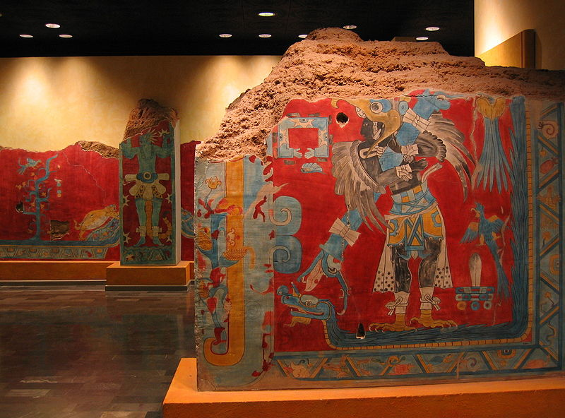
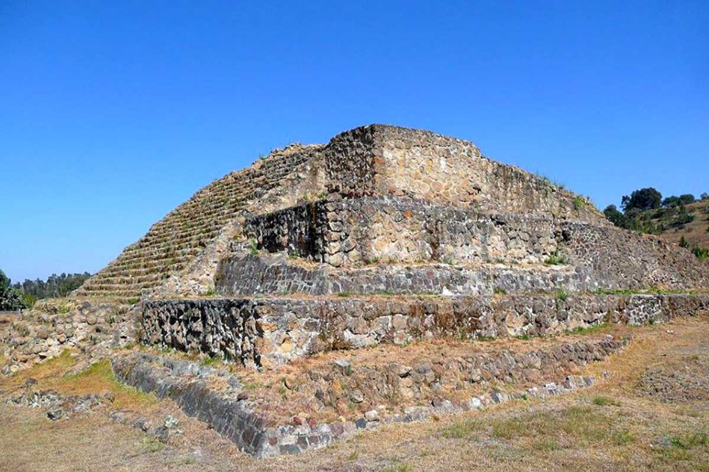

Puedes visitar la Zona Arqueológica de Cacaxtla en Google Maps.
Volcán La Malinche
La Malinche, Malintzin o Matlalcueye, es un volcán sísmicamente activo con una altitud oficial de 4420 metros sobre el nivel del mar, localizado entre los estados mexicanos de Tlaxcala y Puebla. Forma parte del Eje Neovolcánico.
El Valle de Puebla-Tlaxcala, que bordea a la Malinche por el suroeste, alberga una de las mayores áreas metropolitanas de México. Para proteger el área boscosa que ya se encontraba en franco retroceso, se creó en 1938 el parque nacional La Malinche, que supone un refugio para las especies locales como el conejo o el lince. Además, la Estación Científica La Malinche (una colaboración entre la UNAM y la UAT) realiza trabajos de investigación, evaluación, conservación y educación ecológica en la región.
El Centro Vacacional Malintzi, es el lugar ideal para quienes prefieren un contacto 100% con la naturaleza y lejos del estrés, maravillosos paisajes y clima espectacular.
El centro cuenta con:
- Palapas
- Asadores
- Canchas deportivas
- Pista aeróbica
- Pista atlética de tartán de seis carriles.
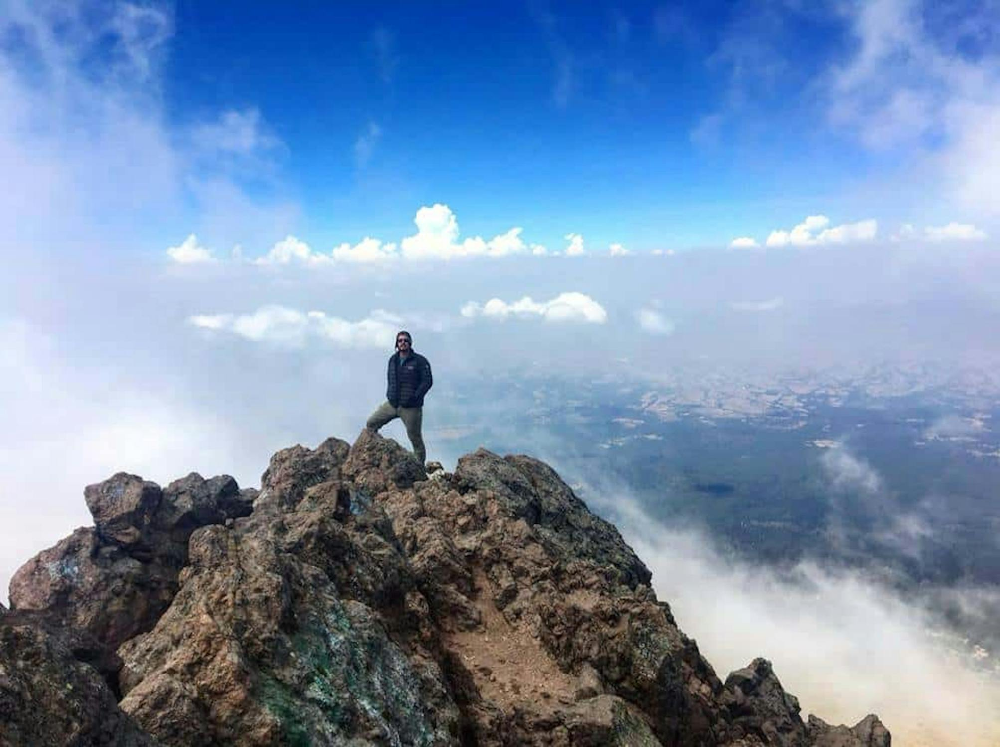


Puedes visitar el Volcán La Malinche en Google Maps.
Val'Quirico
Pocos podrían creer que en México y más específicamente en Tlaxcala existe una campiña de estilo europeo repleta de naturaleza y arquitectura medieval.
Es un desarrollo inmobiliario que es a la vez pueblo, un sitio turístico creado para satisfacer a visitantes y habitantes, que nació con la idea de fundar un lugar en donde convivan dos valores básicos de la vida en sociedad: el respeto y la solidaridad.
Este pueblo construido con materiales naturales para estar en armonía con la naturaleza celebra constantemente eventos, los cuales podrán servir de pretexto para acudir a él y en el que te puedes hasta hospedar un par de días en su hotel boutique.
Las principales actividades que puedes hacer son:
- Caminar por sus calles estilo medieval
- Comer en alguno de los restaurantes del lugar
- Disfrutar del carrusel
- Darle un toque dulce a tu visita con algún postre
- Tomarse fotos en alguna de sus llamativas construcciones
Puedes visitar Val'Quirico en Google Maps.
Zoologico del Altiplano
En términos más técnicos el Zoológico del Altiplano se trata de una UMA de fauna endémica, regional y exótica el cual cumple con los cuatro objetivos de los zoológicos modernos que son la educación, conservación, recreación e investigación.
Es un espacio de recreación para aprender y crear momentos con la diversidad de animales que se encuentran en el espacio. Es bastante interesante observar el comportamiento de cada uno de los animales y la oportunidad de estar cerca de ellos.
ofrece visitas guiadas en las que se incluye la proyección de material sobre educación ambiental, así como capacitaciones para conocer más sobre la fauna silvestre en México y la importancia de preservar los recursos naturales.
Algunos de los animales que puedes apreciar son:
- Tigre
- Jaguar
- Puma
- Oso negro
- Antílope
- Llama
- Mono araña
- Ocelote
- Zorro gris
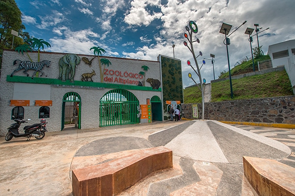
Puedes visitar elZoológico del Altiplano en Google Maps.